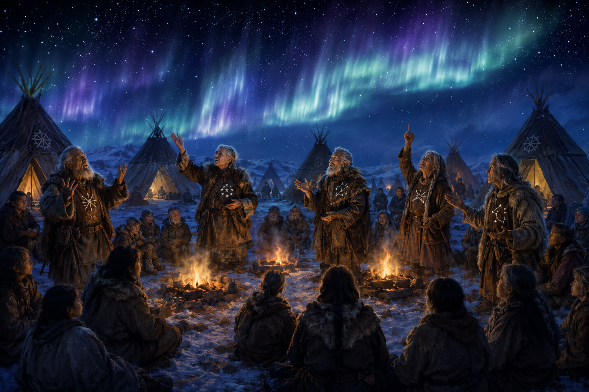
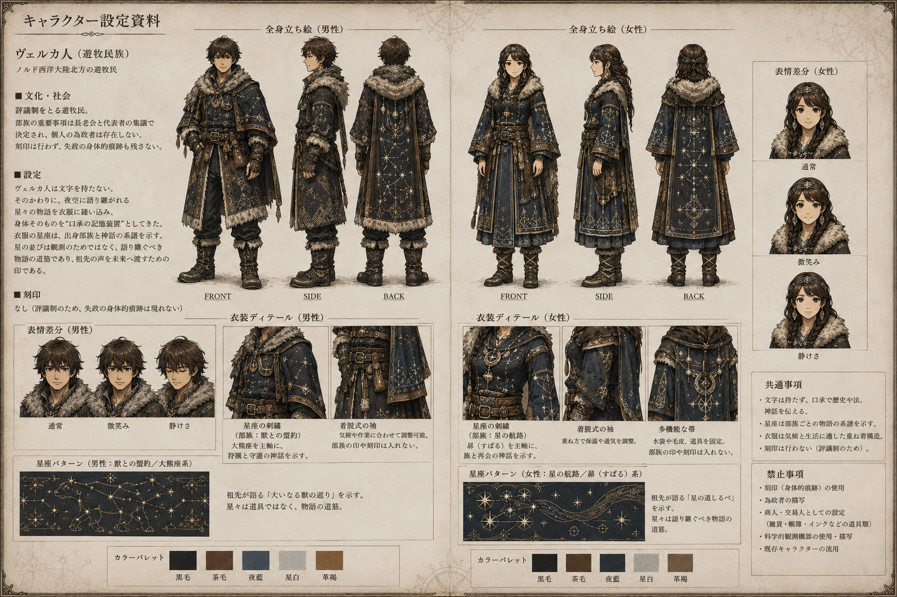

Dictionary / 第二部 — 民族・文化
ヴェルカ人
（ヴぇるかじん） 固有名詞・民族
ヴェルカ人の都市 — 雪原に広がる円環状の評議都市

ヴェルカ人の信仰 — オーロラの下、長老たちの口承集会

ヴェルカ人の衣装設定 — 遊牧民族の星座衣装
ノルド西洋大陸の半遊牧的民族。口承文学・天文観測・集団意思決定の技術が発達し、部族評議会制という水平的な社会組織を持つ。「全員一致を待ち続ける」決定不能トラップという失政パターンを持つ。即答しないことを価値とする文化。世界をヌルク・ヴェル（壁のある夜）と呼ぶ。
関連項目